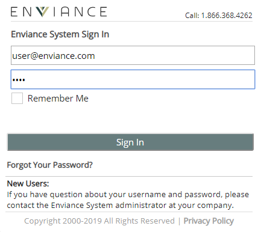

When the sign-in page is displayed, enter your username and password, and click Sign In.

If you forgot your password:
Enter your email address and click Forgot Your Password?
Forgotten password request: This option enables users to reset their passwords by clicking on a "forgot your password" link on the sign-in page. An email with a temporary password is sent to the email on the user profile.
If your user role is Vault Search Only, you need to contact your administrator to reset your password.